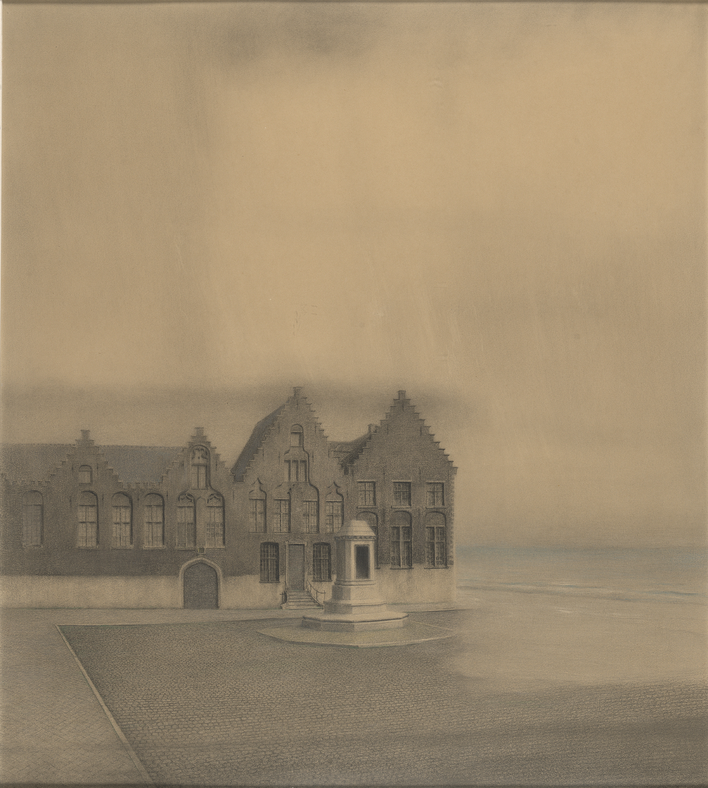
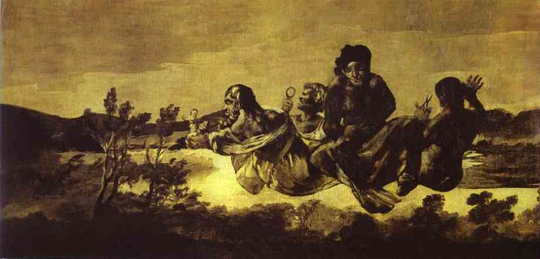

← 目次“I flew around like mad to get ready, and before forty-eight hours I was crossing the Channel to show myself to my employers, and sign the contract. In a very few hours I arrived in a city that always makes me think of a whited sepulchre. Prejudice no doubt. I had no difficulty in finding the Company’s offices. It was the biggest thing in the town, and everybody I met was full of it. They were going to run an over-sea empire, and make no end of coin by trade.
I arrived in a city that always makes me think of a whited sepulchre.
Photoglob Co.（フォトクローム）, Bruxelles, Palais de Justice, 1890–1900年ごろ／Public domain／Commons
“A narrow and deserted street in deep shadow, high houses, innumerable windows with venetian blinds, a dead silence, grass sprouting between the stones, imposing carriage archways right and left, immense double doors standing ponderously ajar. I slipped through one of these cracks, went up a swept and ungarnished staircase, as arid as a desert, and opened the first door I came to. Two women, one fat and the other slim, sat on straw-bottomed chairs, knitting black wool. The slim one got up and walked straight at me—still knitting with downcast eyes—and only just as I began to think of getting out of her way, as you would for a somnambulist, stood still, and looked up. Her dress was as plain as an umbrella-cover, and she turned round without a word and preceded me into a waiting-room. I gave my name, and looked about.
Two women, one fat and the other slim, sat on straw-bottomed chairs, knitting black wool.
Deal table in the middle, plain chairs all round the walls, on one end a large shining map, marked with all the colours of a rainbow. There was a vast amount of red—good to see at any time, because one knows that some real work is done in there, a deuce of a lot of blue, a little green, smears of orange, and, on the East Coast, a purple patch, to show where the jolly pioneers of progress drink the jolly lager-beer. However, I wasn’t going into any of these. I was going into the yellow. Dead in the centre. And the river was there—fascinating—deadly—like a snake. Ough!
A. J. Johnson, Johnson’s Africa, 1864／Public domain／Commons
A door opened, a white-haired secretarial head, but wearing a compassionate expression, appeared, and a skinny forefinger beckoned me into the sanctuary. Its light was dim, and a heavy writing-desk squatted in the middle. From behind that structure came out an impression of pale plumpness in a frock-coat. The great man himself. He was five feet six, I should judge, and had his grip on the handle-end of ever so many millions. He shook hands, I fancy, murmured vaguely, was satisfied with my French. Bon Voyage.
“In about forty-five seconds I found myself again in the waiting-room with the compassionate secretary, who, full of desolation and sympathy, made me sign some document. I believe I undertook amongst other things not to disclose any trade secrets. Well, I am not going to.
“I began to feel slightly uneasy. You know I am not used to such ceremonies, and there was something ominous in the atmosphere. It was just as though I had been let into some conspiracy—I don’t know—something not quite right; and I was glad to get out. In the outer room the two women knitted black wool feverishly. People were arriving, and the younger one was walking back and forth introducing them. The old one sat on her chair. Her flat cloth slippers were propped up on a foot-warmer, and a cat reposed on her lap. She wore a starched white affair on her head, had a wart on one cheek, and silver-rimmed spectacles hung on the tip of her nose. She glanced at me above the glasses. The swift and indifferent placidity of that look troubled me. Two youths with foolish and cheery countenances were being piloted over, and she threw at them the same quick glance of unconcerned wisdom. She seemed to know all about them and about me, too. An eerie feeling came over me. She seemed uncanny and fateful. Often far away there I thought of these two, guarding the door of Darkness, knitting black wool as for a warm pall, one introducing, introducing continuously to the unknown, the other scrutinizing the cheery and foolish faces with unconcerned old eyes. Ave! Old knitter of black wool. Morituri te salutant. Not many of those she looked at ever saw her again—not half, by a long way.

Francisco de Goya, Atropos (The Fates), 1819–23／Public domain／Commons
“There was yet a visit to the doctor. ‘A simple formality,’ assured me the secretary, with an air of taking an immense part in all my sorrows. Accordingly a young chap wearing his hat over the left eyebrow, some clerk I suppose—there must have been clerks in the business, though the house was as still as a house in a city of the dead—came from somewhere up-stairs, and led me forth. He was shabby and careless, with inkstains on the sleeves of his jacket, and his cravat was large and billowy, under a chin shaped like the toe of an old boot. It was a little too early for the doctor, so I proposed a drink, and thereupon he developed a vein of joviality. As we sat over our vermouths he glorified the Company’s business, and by and by I expressed casually my surprise at him not going out there. He became very cool and collected all at once. ‘I am not such a fool as I look, quoth Plato to his disciples,’ he said sententiously, emptied his glass with great resolution, and we rose.
“The old doctor felt my pulse, evidently thinking of something else the while. ‘Good, good for there,’ he mumbled, and then with a certain eagerness asked me whether I would let him measure my head. Rather surprised, I said Yes, when he produced a thing like calipers and got the dimensions back and front and every way, taking notes carefully. He was an unshaven little man in a threadbare coat like a gaberdine, with his feet in slippers, and I thought him a harmless fool. ‘I always ask leave, in the interests of science, to measure the crania of those going out there,’ he said. ‘And when they come back, too?’ I asked. ‘Oh, I never see them,’ he remarked; ‘and, moreover, the changes take place inside, you know.’ He smiled, as if at some quiet joke. ‘So you are going out there. Famous. Interesting, too.’ He gave me a searching glance, and made another note. ‘Ever any madness in your family?’ he asked, in a matter-of-fact tone. I felt very annoyed. ‘Is that question in the interests of science, too?’ ‘It would be,’ he said, without taking notice of my irritation, ‘interesting for science to watch the mental changes of individuals, on the spot, but...’ ‘Are you an alienist?’ I interrupted. ‘Every doctor should be—a little,’ answered that original, imperturbably. ‘I have a little theory which you messieurs who go out there must help me to prove. This is my share in the advantages my country shall reap from the possession of such a magnificent dependency. The mere wealth I leave to others. Pardon my questions, but you are the first Englishman coming under my observation...’ I hastened to assure him I was not in the least typical. ‘If I were,’ said I, ‘I wouldn’t be talking like this with you.’ ‘What you say is rather profound, and probably erroneous,’ he said, with a laugh. ‘Avoid irritation more than exposure to the sun. Adieu. How do you English say, eh? Good-bye. Ah! Good-bye. Adieu. In the tropics one must before everything keep calm.’... He lifted a warning forefinger.... ‘Du calme, du calme.’
‘In the tropics one must before everything keep calm.’ He lifted a warning forefinger. ‘Du calme, du calme.’